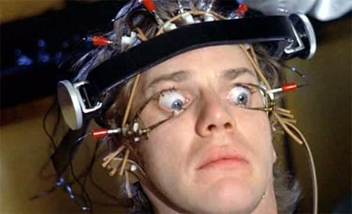
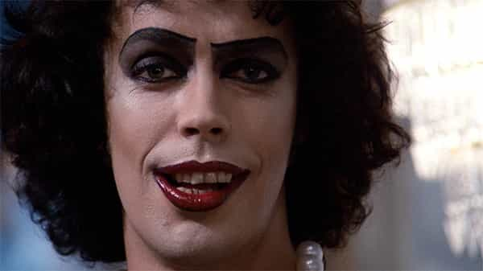

André is a young European who left his decaying country in 2012 for greener pastures. He enjoys exploring subterranean places, reading about a host of interconnected topics, and yearns for Tradition.


Psychology matters. Just like politics, if you don’t care about it, someone else will take it over for you. Having at least some basic wisdom about how our own minds works allows for self-mastery, through getting distanced from subconscious automatisms, gaining the ability to make explicit ingrained or initially implicit beliefs, and turning aware of our emotions instead of being directly determined by them. This is consistent with the traditional mission of men: someone who masters himself is fit to rule his home and bypass shit tests.
From at least the beginning of the twentieth century, Leftists and some strongly identified Jews slowly took over the humanities. Psychology did not escape their grip, as comparative psychologists can tell about. The Gramscis investigated culture, the Bernays—Freud’s nephew—laid the foundations of “public relations.” Not incidentally, one of Bernays’ first advertisement campaign used powerful symbols of fire and freedom, to lure women into heavy smoking and taking prostitutes as their role models.
Since then, the Left sharpened its weapons, gaining a decisive advantage over the less Machiavellian and generally spineless conservatives. Now, as they use a wide range of psychological determinations such as operant conditioning or bestowing coolness and fashionability on whatever they want to shovel down our throats, they go as far as reverse accusations. Conservative voters are put under extra psychological scrutiny, analyzed much less charitably, more criticized and sneered at, whereas liberals allow themselves many passes and fancy names like “public relations”, “management sciences”, “human resources”, “social justice” or “affirmative actions” to act as manipulation-covering memes.
As Alex Jones says, “there’s a war for your mind”, and here we will cover one of the battlegrounds: the psychology of dirtiness and taboo. Basically, the dirty is what carries risks of contamination, tainting, impurity, and consequently should be avoided or handled with special attention.
The Scriptures have a long list of impure stuff, whether we talk about the Leviticus or the Manu Laws, and many unrelated primitive tribes used to isolate women during their period because of the dirty blood getting away. As for the taboo, it bears a relation with the sense of dirt: if the mere mention of a topic or pronouncing certain words carry a risk, then it is better not to mention these—or follow particular rules when handling them, such as tackling the topic only through a particular framing or in a well-marked context.
Leftists often enjoy deriding whatever sense of purity conservatives still have. They perceive it as “outdated”, not to be compared with, say, a modern surgeon’s sense of hygiene. Yet, far from “emancipating” from that often derided part of the human mind, contemporary libtards have their own sense purity which they have imposed on everyone. Just as the puritan of yesterday would not dare to mention sex without relating it to sin, the problem-glasses wearer of now would not allow xieself to jest while speaking of “Nazism.”
Disgust is a universal human emotion. Aside from toddlers and those who got accustomed to certain objects, everyone feels repulsion from, say, cockroaches or eating feces. As psychologist Stephen Pinker sums up,
Though disgust is universal, the list of nondisgusting animals differs from culture to culture, and that implies a learning process… [Disgust] is a straightforward adaptation to a basic fact about the living world: germs multiply… A single, invisible, untestable germ can multiply and quickly saturate a substance of any size. Since germs are, of course, transmittable by contact, it is no surprise that anything touches a yucky substance is itself forever yucky, even if it looks and tastes the same. Disgust is intuitive microbiology. (How The Mind Works, chap.6, “Food for thought”)
Just like some instinctive phobia—people are innately phobic to cockroaches, hairy spiders, or snakes—, disgust can be easily explained from an evolutionary point of view. Phobia of the dangerous has a preventive role. Disgust of what could bear disease prevent from eating or getting in close contact with it. It is better to sometimes have false positives, i.e. be disgusted by something actually not dangerous, than miss the mark and ingest a fatal poison.
It is possible to overcome disgust and phobias, just as it is possible to overcome fear and act courageously in spite of it. Some are able to live in close contact with scorpions or snakes, two animals that are well-known as instinctively feared of. Likewise, throwing oneself in an obviously risky situation or bungee-jumping from a bridge are behaviors that go beyond instinct—not exactly the same one, perhaps, but still an atavistic and usually useful limitation.
In traditional societies, many rites of passage meant confronting one’s own fear: a young boy let alone in the dark for hours had to ride his own fear of loneliness or obscurity. Sometimes, going beyond the fear of something was deemed enough of an achievement for the “vanquisher” to adopt or use the object of his former fear. Bruce Wayne’s “batmanism” is merely an embodiment of this ancient practice. (Tangentially, the object of fear can be overturned into a positive, while the object of disgust appears essentially disgusting and thus to be forever casted out.)
Of course, disgust can go well beyond the actually dangerous for us as living beings, and its objects can vary culturally. A Muslim typically feels disgust at the idea of eating pork, although a well-cooked ham shank has every chance of being healthier than some dirty street kebab. Here Pinker claims that many forbidden foods are so as to exclude the neighbor’s favorite food, and thus maintain each tribe separated by its own dietary customs.
Taboos are the social covering of what raises shared disgust. It could be argued that at least some traditional taboos were socially useful. The Victorian touchiness on sex prevented girls from letting free rein to their hypergamy. Similarly, in the medieval era, heresy was met with horror. Only priests had a right to read heretic texts and consider potentially heretical viewpoints, for example during the disputations (contradictory oral examinations): they had to be intelligent and endowed with a sufficient sense of the good to be able to consider, weigh, and dispel heresies.
The illiterate, on the other hand, could not have such a sense and were liable to “contamination” by bad ideas. This may seem elitist, but if you look at how the European oecumena was really torn apart by Protestantism and how so many shades of anti-tradition were able to find themselves a supporting public after the Church lost ground, the anti-heresy taboo seems retrospectively quite justified to me.

The cultural, rewritable aspect of the taboo psychology has metapolitical implications. Campaigns to sensitize to X aim at shifting the public attention to X, push for a particular framing, and most importantly raising disgust or tamping it down. In 2015, a feminist successfully attention-whored by allegedly running a marathon during her periods and showing the blood off. While the look-at-me dimension of her act cannot be ignored, the running and media campaign around it aimed at de-sensitizing people so that we would lose any disgust towards menstrual blood or the plain show of it.
Today, the mainstream media are campaigning to trivialize paedophilia. One of their thrusts consists in painting pedophiles as humane, sympathetic people who just happen to feel sexual arousal towards children: the predatory aspect is downplayed, and the impression they create generates much less disgust than the usual. At bottom, all societal progressivism is about manipulating the norms and layman’s feelings. Do you remember that sodomy was deemed disgusting before it was turned into a mean for superior arousal?
Raising and tampering disgust down, erasing taboos and creating new ones, are part of the social engineer’s toolbox. The more we let our autonomy behind in the name of “progress”—or just because consuming the elite’s shows is much easier than pushing ourselves—the more gullible and blank-slateish we become. Journalists and experts are paid to rewrite our brains on the behalf of the elite managers.
The 70s witnessed several Leftist experiments in taboo transgression and desensitization on screen. In 1972, the movie Pink Flamingos exhibited the adventures of a tranny performing all sorts of disgusting acts, from stuffing a pork tenderloin between xis legs to eating dog poo in a non-simulated scene, and of other degenerates who would dwell in human trafficking, prostitution and friendship with gays.
Two years later, a French director released a movie of the same vein although more subtle: Going Places showed two anti-heroes living a nomad live, committing petty crimes and running away, sometimes having sex with random girls. One of the main scenes features a teenage girl who flees her “boring” bourgeois, middle-class parents and prefers giving her virginity to the protagonists. Back in the US, 1975 saw the release of the Rocky Horror Picture Show, a four-hour piece mixing theatre with cinema and featuring tranny characters as heroes.

All these movies willfully violated the normal taboo around trannyism and trivialized degeneracy. Not incidentally, all three are considered “cult” and of high artistic value by baby-boomers. Of course, what the Left and its degenerate “artists” did is something only they have a right to do: if I claim that Leni Riefenstahl’s Triumph of the Will (1936) is beautiful and cult, and if I share doubts about the truth of the official version of the Holocaust, a swarm of Leftists will likely call me a “Nazi sympathizer” or a nasty troll. Indeed, by doing so, I would be violating the taboo they created around “Nazism”—but why can’t I go beyond taboos and display disgust as well as they did? Because, according to their scenario, only they have a right to shape culture and rewrite norms.
As Leftists desensitized, trivialized and pretended to “emancipate” from the old taboos, they also created disgust and awkwardness around things that were normal before. Post-1945 common French language features a variety of expressions such as “sulphurous position” or “sulphurous people”, “smelling like fir”, “foul”, all applied to so-called far-right positions or politics. Why these statements referring to smell or dirt whereas immaterial ideas clearly cannot have any? Well, because they activate and reinforce a peculiar psycho-social conditioning.
Communist writer Bertol Brecht framed European traditions and their defenders as a “foul beast”, and since then, the expression has been widely re-used by globalists. Nothing to do with reason of course—this is a purely emotional, framing, and custom-related conditioning, and that works. Before you took the red pill, wasn’t the dirtiness of “Nazism” seemingly obvious? If you are truly red pilled, it should be much less obvious now.
Shakti, a Hindu personification of indefinite possibilities. A thousand arms can achieve a lot
The first step is to free ourselves from the Leftist conditioning. This consists into distancing ourselves from, identifying clearly and deconstructing the framings, concepts and other reflexes we have been “educated” with. Some of these can be used, thus turning into tools into our hands instead of outwardly imposed limitations, some ought to be simply rejected.
The second step consists in crafting our own cultural content and concepts. This means, of course, re-inverting what had already been inverted, and venturing into “forbidden territory.” The Alt-Right has done a good job at inverting the stigma against “fascism” by turning it into something fashy, which looks like fashionable and takes up some coolness instead of vegetating at the wrong side of the system.
This also means we have to push for healthier norms. Fat-shaming is good. Disgusting, complacent obese girls are unhealthy and unclean on all points of view—they should be ashamed. The same goes with pedophiles and race-destroying miscegenation. Make a healthier and truer common sense great again.
Before that, we have to troll a bit—and what is trolling after all if not our own version of the Left and baby-boomer’s “revolution” and “emancipation”?
To conclude, I would like to share the following suggestion made by a former liberal:
When an artist submerges a crucifix in a jar of his own urine, or smears elephant dung on an image of the Virgin Mary, do these works belong in art museums? Can the artist simply tell religious Christians, “If you don’t want to see it, don’t go to the museum”? Or does the mere existence of such works make the world dirtier, more profane, and more degraded?
If you can’t see anything wrong here, try reversing the politics. Imagine that a conservative artist had created these works using images of Martin Luther King Jr. and Nelson Mandela instead of Jesus and Mary. Imagine that his intent was to mock the quasi-deification by the left of so many black leaders. Could such works be displayed in museums in New York or Paris without triggering angry demonstrations? Might some on the left feel that the museum itself had been polluted by racism, even after the paintings were removed? (Jonathan Haidt, The Righteous Mind, chap.5)
If one believes that “Nazism” and defending one’s country are somehow dirty, but sees nothing wrong with trannyism and being aroused by children, one deserves being “triggered.” Let’s shape the unspoken rules of the acceptable and unacceptable, no matter the hysterical reactions we meet with, until they are just as they ought to be.
Read Next: How Irrational Fear Is Being Used To Control Your Behavior